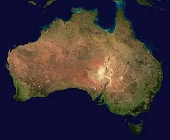

Австра́лия — континент, расположенный в Восточном и Южном полушариях Земли. Является наименьшим по площади и самым засушливым материком Земли. Вся территория материка является основной частью государства Австралия. Материк входит в часть света Австралия и Океания.
Рельеф.
Преобладают равнины. Около 95 % поверхности не превышают 600 м над уровнем моря. Западно-Австралийское плоскогорье — средние высоты 400—500 метров, с приподнятыми краями: на востоке — горы Масгрейв (высшая точка — гора Вудрофф, 1440 м) и хребет Мак-Доннелл (высшая точка — гора Зил, 1511 м), на севере — плато Кимберли (высота до 936 м), на западе — плосковершинный песчаниковый хребет Хамерсли (высшая точка — гора Мехарри, 1251 м), на юго-западе — хребет Дарлинг (высшая точка — гора Кук, 571 м). Центральная низменность с преобладающими высотами до 100 м над уровнем моря. В районе озера Эйр низшая точка — 16 м ниже уровня моря. На юго-востоке — хребет Маунт-Лофти. Большой Водораздельный хребет, средневысотный, с плоскими вершинами, крутыми, переходящими на западе в холмистые предгорья (даунсы). На юге в Австралийских Альпах высшая точка — гора Косцюшко, 2228 м.
Австралийский континент расположен в пределах трёх основных тёплых климатических поясов Южного полушария: субэкваториального (на севере), тропического (в центральной части), субтропического (на юге). Только небольшая часть острова Тасмания находится в пределах умеренного пояса.
Расположенный в основном в тропических и субтропических широтах, где солнечная радиация велика, Австралийский материк сильно нагревается. В связи со слабой изрезанностью береговой линии и приподнятостью окраинных частей влияние морей, окружающих материк, слабо сказывается во внутренних частях.
Австралия — самый сухой континент Земли, и одна из наиболее характерных черт его природы — широкое распространение пустынь, которые занимают обширные пространства и протягиваются почти на 2,5 тыс. км от берегов Индийского океана до предгорий Большого Водораздельного хребта.